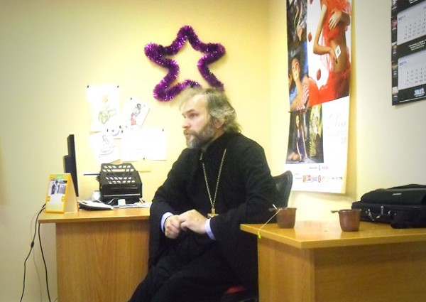
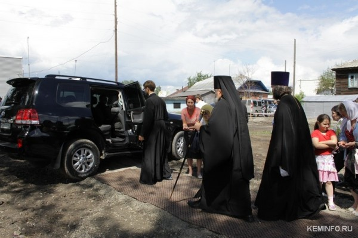

Рассуждать о церкви любят многие. Мол заелась организация, функцию основную не выполняет, другим футбольным командам проигрывает да и вообще, креста на них нормального нет. Я конечно не исключение. Деятельность доминирующей в России (как минимум в медиасфере) религиозной организации нарочитой роскошью вызывает когнитивный диссонанс. К тому же офисы у нас рядом.
Упражняться в полемике в интернетах по-первости, конечно, интересно. Но без общения с действительными священниками процедура эта всё больше походит на обучение плаванию по самоучителю. Поэтому когда Андрей Иванов из А42 написал у себя в ЖЖ, что приглашает на встречу с «блогерами» иерея Сергия Веремеева, я сразу решил пойти. К чему фантазировать в туалете, когда можно спросить прямо?
Рассуждать о церкви любят многие. Но на саму встречу (анонсировалась она в достаточной мере), которая состоялась вчера вечером в редакции А42 пришли, включая меня, 4 человека. С самим Андреем получилось пять. (Были еще девушки из редакции А42, но они в середине дискуссии предпочли свежий воздух). Остальным рассуждающим, вероятно, для дискуссий о вреде церкви существующих знаний достаточно.

Сан иерея, который носит Сергий Веремеев это вторая ступень в церковной иерархии. Что-то, как мне кажется, вроде лейтенанта. Иерей может осуществлять все таинства (крестить, бракосочетать и т.п.), но не может наделять других саном иерея. Сергий — руководитель информационно-просветительского отдела Кемеровской и Новокузнецкой епархии, то есть достаточно компетентный человек для ответов на многие вопросы. Кроме работы по просвещению является еще и настоятелем прихода в завокзальной части Кемерова, на месте которого будет построена церковь.
Приход начал строиться год назад (я тогда ездил на открытие) и на настоящий момент с божьей помощью и за 500 тысяч рублей уже функционирует.

Собственно нарочитой роскоши, которая окружает работников церкви и была посвящена первая часть встречи. На очень благородная тема, и очень не хотелось заниматься троллингом, но обойти этот момент было никак нельзя.
На заданный вопрос о том, как относится Сергий к тому что его руководитель, владыка Аристарх, передвигается по городу на чёрном Лэнд Круйзере, иерей ответил, что очень положительно. Мы спросили его почему бы не выбрать что-то поскромнее. Сергий посетовал на качество продукции российского автопрома. Вообще, если отбросить 30 минутный разговор на разных языках, иерей Сергий повторил озвученную несколько месяцев назад позицию протоирея Всеволода Чаплина. Священники не ограничивают себя в роскоши, потому что грязной оборванной рубахой прихожан в церковь не завлечёшь.
У людей находящихся вне церкви подобная позиция, разумеется, никакого понимания не встречает, но я понял, что спорить с сотрудниками церкви на эту тему бесполезней чем смотреть на то, как дует ветер.
На провокационный вопрос от Михаила Рязанова о соглашении между областной администрацией и представителями крупного бизнеса о финансировании церкви, Сергий ответил, что во-первых это дело администрации и бизнеса, а во-вторых не видит в этом ничего плохого.
Кстати иерей Сергий в качестве способа защиты-нападения избрал самый жестокий для меня способ под названием «Много говорю. Не останавлаваюсь»
После первых полутора часов силами активных участников диалог удалось вернуть в спокойное и более-менее информативное русло.
На мои, к примеру, вопросы священник ответил следующее:
- Сергий бывший театральный режиссёр. В церковь пришёл уже будучи взрослым.
- Пользуется телефоном с двумя симками. Для работы и для дома.
- Раньше играл (не заигрывался, а просто играл) в компьютерные игры. К примеру CounterStrike.
- Пользуется фототехникой Canon
- Не курит. Не вегетарианец. Изредка разумно употребляет алкоголь.
- В рясе ходит не всегда. Признаёт это некоторой слабостью.
- Ездит на Рено Логан (это я увидел уже на улице)
- Занимался раньше спортом (баскетбол, самбо)
- Много был за границей, в том числе по церковным делам
- Любит путешествовать с семьей за рулём автомобиля.
Андрей Иванов заметил, что в Кузбассе хорошо удаётся уживаться, в отличие от той же Москвы, разным религиям. На что иерей Сергий рассказал, что в этом есть большая личная заслуга губернатора Амана Тулеева, и отдельно отметил желание не являющихся кузбасскими мусульман взять под «опеку» построенную не так давно мечеть «Мунира». В таком случае отношения между конфессиями в Кемерове складывались бы по мнению Сергия значительно хуже, но этого, к счастью, удалось избежать.
Начавшаяся в 19 ч. встрече закончилась через три часа. На мой взгляд, закончилась хорошо и логично. На вопрос от ranis_ovak о происхождении благодатного огня в Иерусалиме иерей Сергий ответил следующее. Для верующего человека по сути неважно появляется ли это огонь в результате чуда или от зажигалки священника. Как и в случае с вином и хлебом, становящимися после молитвы для верующих плотью и кровью Христовой, святость огня находится в голове и не требует физических доказательств. Видимо так и с другими атрибутами, в том числе и пресловутым Лэнд Круйзер. Не надо искать откуда он появился. Он просто есть.